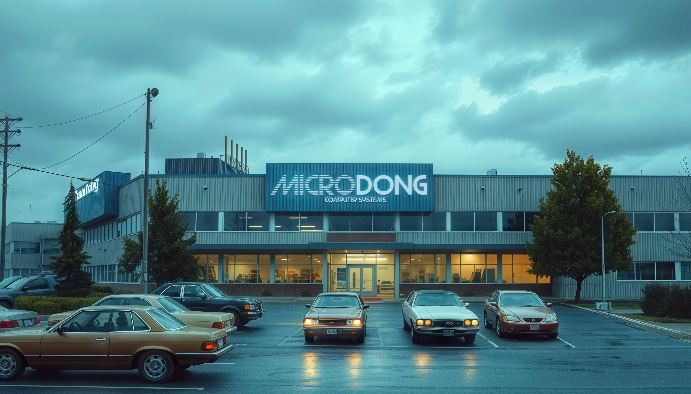
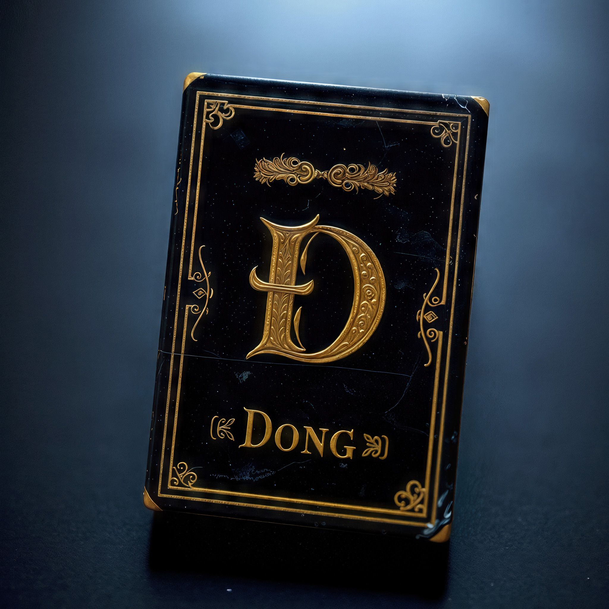
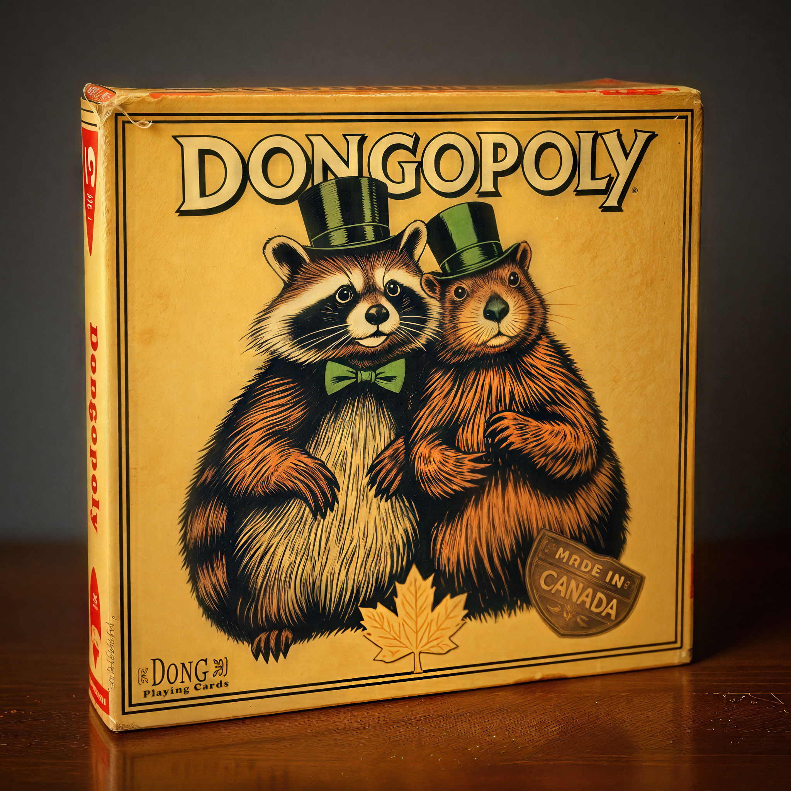
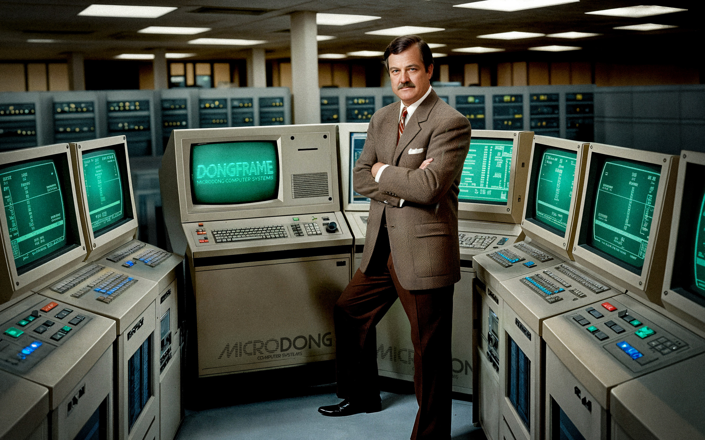
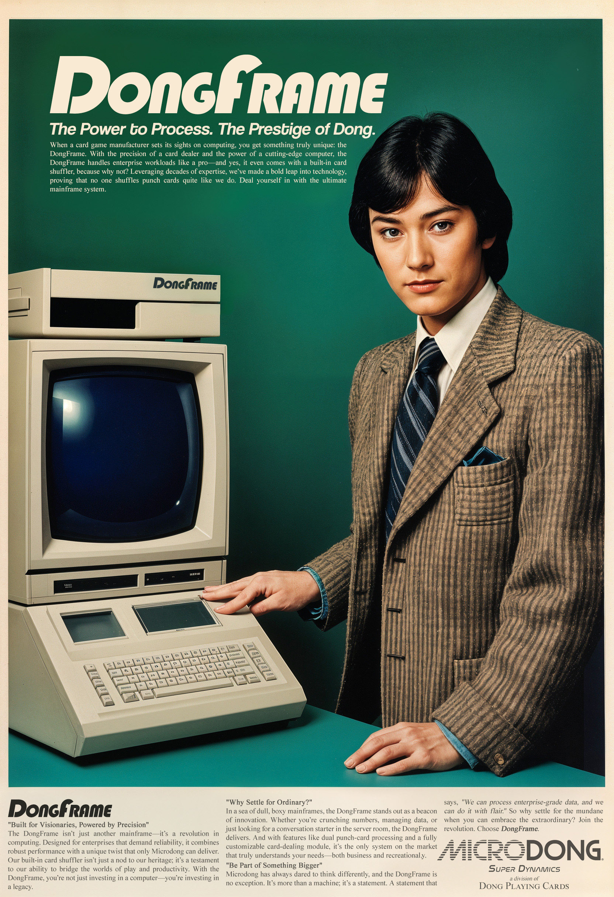
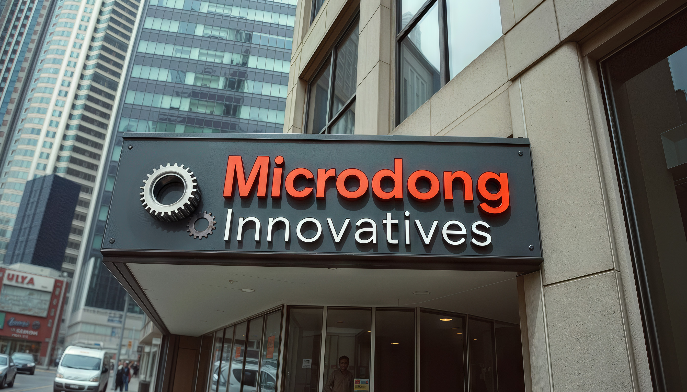
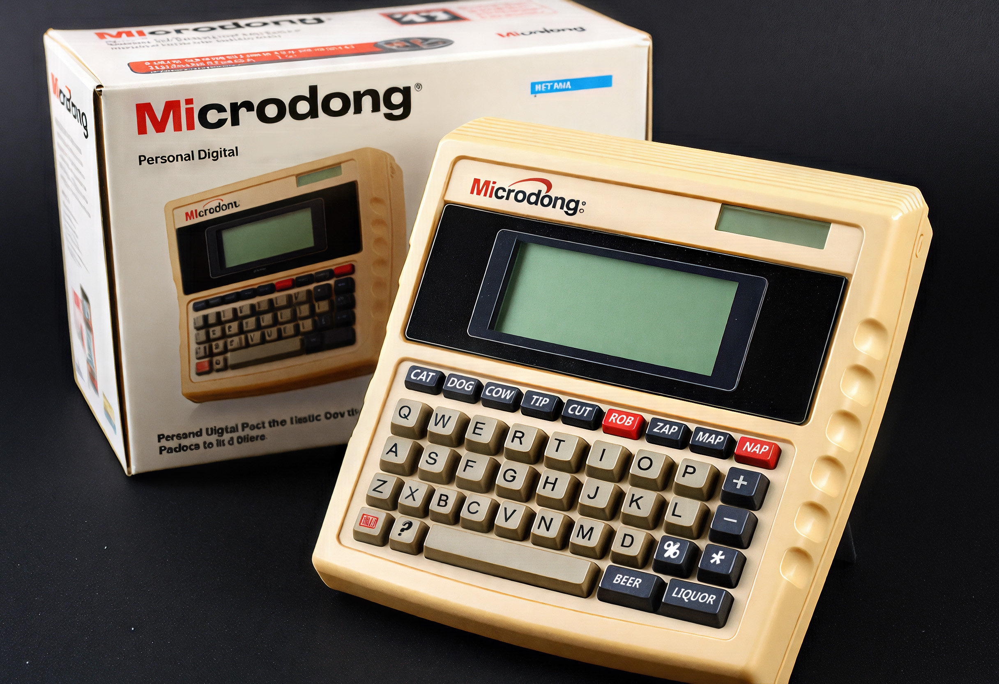
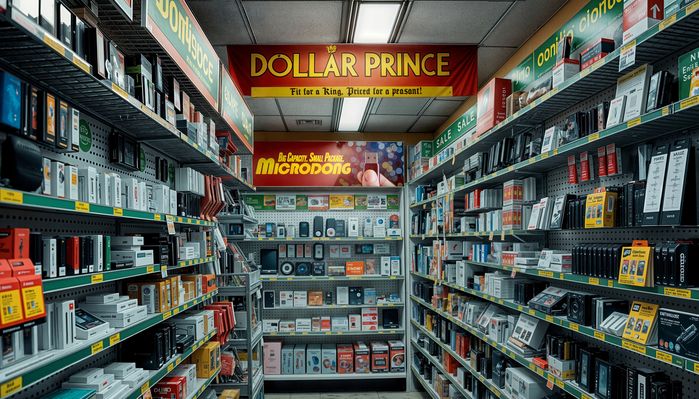
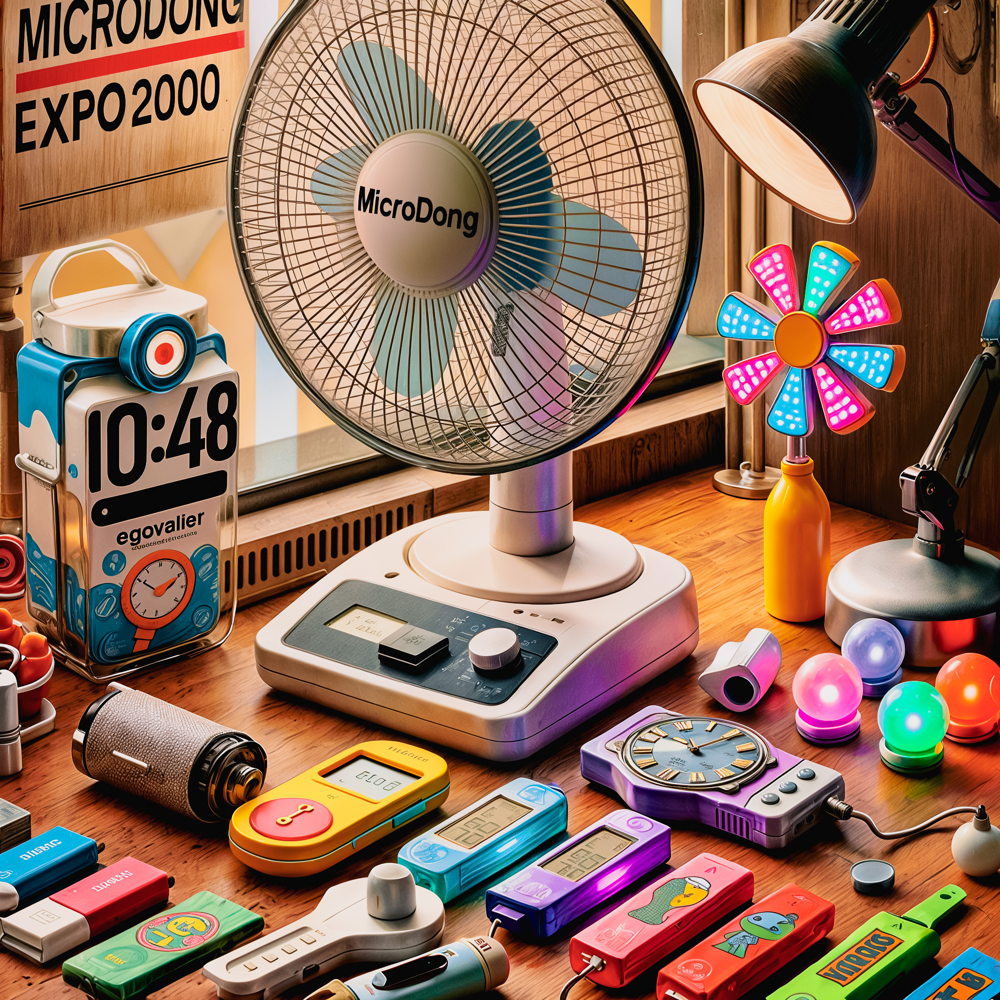

Our Story
The history of Microdong Systems is long, weird, and—much like the company itself—held together by a mix of ambition, bad decisions, and legally dubious paperwork. What started as a humble 19th-century playing card company has, through an increasingly baffling series of events, become a tech brand with a devoted following.
Along the way, Microdong has survived name changes, bizarre product pivots, and business decisions that defy explanation. It has endured bankruptcy auctions, hostile takeovers, and at least one suspiciously timed warehouse fire. Large portions of its history were lost during these transitions, forcing the company to painstakingly reconstruct its past—mostly through a mix of speculation, guesswork, and handwritten legal threats.
Yet, against all odds, Microdong endures. In 2013, its fate took another unexpected turn when James Deschenes—armed with nothing but lunch money and curiosity—became its latest owner. Since then, the company has continued to embrace the unexpected, mostly because careful planning has never been its strong suit.
Proof that chaos, when properly mismanaged, can lead to greatness.
"Innovation doesn’t have to be big—sometimes, it’s just small enough to fit in your pocket... like my playing cards."
"I didn’t set out to buy a tech company—I just wanted lunch. Now, somehow, I’m running Microdong. Funny how life works."

The Rise of Dong Playing Cards
(1870s–1930s)
- Victor Dongschäfer, a German settler, moves to Ontario in the late 1800s and starts a playing card company called "Dong Playing Cards."
- The company gains unexpected popularity due to its unique, somewhat scandalous logo featuring a bold "D" emblem.
- In the 1920s, Dong Playing Cards creates a limited edition deck, "Dong's Luck," which accidentally becomes a collectible item after a factory misprint.

The "Dong Expansion" Era
(1940s–1970s)
- During the 1940s, Dong Playing Cards diversifies into other leisure games, creating board games like "Dongopoly" and "The Great Dong Race."
- In the 1960s, Dong Playing Cards partners with a toy manufacturer to release a line of novelty toy gadgets called "Microdong Minis."
- Due to a clerical error, Dong Playing Cards is briefly rebranded as "Microdong Novelties" in the 1970s. The name sticks, leading to an odd reputation among collectors.


The Mainframe Meltdown Era
(1970s–1980s)
- Flush with cash from its novelty successes, Microdong Novelties pivots into the booming tech industry of the late 1970s. The company sets its sights on supercomputing, launching a line of ambitious mainframe systems called "DongFrame."
- Despite bold marketing, the DongFrame mainframes are plagued by inefficiencies and bizarre design quirks, like a built-in card shuffler (a nostalgic nod to their roots).
- Microdong Novelties pours nearly all its capital into the project, betting everything on becoming a leader in enterprise computing.
- By the early 1980s, the company is drowning in debt after the DongFrame flops in the market, unable to compete with more efficient systems from established tech giants. The ambitious pivot nearly bankrupts the company, leaving it a shadow of its former self.


The Pocket-Sized Pivot
(1980s–1990s)
- In 1983, Dong Playing Cards is acquired by an eccentric investor who believes the future is in "pocket gadgets." He renames the company "Microdong Innovatives."
- By the 1990s, the company fully shifts focus to primitive electronic devices, like pocket organizers and low-budget digital watches. None of them are particularly successful, but the brand "Microdong" starts to be associated with quirky tech.
- After a failed attempt to create the "Microdong Personal Digital Assistant" in the late 90s, the company nearly goes bankrupt, again, and is sold at auction.


A Tech Renaissance
(2000s)
- In the early 2000s, Microdong is bought by venture capitalist Buck Grift who envisions a whole new line of cheap, quirky consumer electronics—like USB-powered egg timers, odd toilet gadgets, a digital sundial, and LED mood-rocks.
- During this period, a cult following develops around the brand, largely due to the "so bad it's good" quality of their products.
- Microdong unexpectedly becomes a minor internet sensation after a LiveJournal blogger shares that the Microdong GlowPet™ USB memory stick isn’t actually blank, but comes preloaded with lewd pictures of Buck Grift. The bizarre revelation goes viral, and sales skyrocket as curious buyers rush to get their hands on the infamous gadget.
- By 2012, the brand is once again on the brink of collapse. A brief surge in sales driven by morbid curiosity was quickly overshadowed by a wave of crushing lawsuits. As it turns out, selling ‘gently used’ USB sticks preloaded with lewd Buck Grift photos wasn’t a sustainable business model—especially after a few found their way into the hands of minors. Buried under legal fees and bad press, the desperate owner puts the company up for auction one last time.
{kind=link}

The Deschenes Takeover
(2013-2024)
- In late 2013, the auction takes place in a hidden Toronto back-alley. James Deschenes, on a simple lunch break, stumbles upon the event and impulsively bids his lunch money, securing the winning bid and unexpectedly becoming the new owner of Microdong Computer Systems.
- As the new owner, James’ first hungry move is to develop a prototype AI called Robputer. However, despite the initial excitement, it’s never publicly released. The project is quietly shelved, leading to years of radio silence...
- During this time, nothing significant happens. Microdong Systems seems almost forgotten—until, in 2024, someone reminds James Deschenes that he actually owns the company.
- With renewed interest, it's suggested that Robputer might be exactly what the world needs, sparking a revival of the brand.
The Robputer Era
(2025 and beyond)
- In 2025, Robputer is officially announced to the world with a new website, a fresh logo, and a bold mission: to bring a quirky, fun, and affordable AI to the masses.
- Microdong Systems is reborn as a brand with a sense of humor, a love for the unexpected, and a commitment to making its website accessible to almost everyone (excluding Apple device users, due to testing limitations).
- And the rest, as they say, is history in the making...